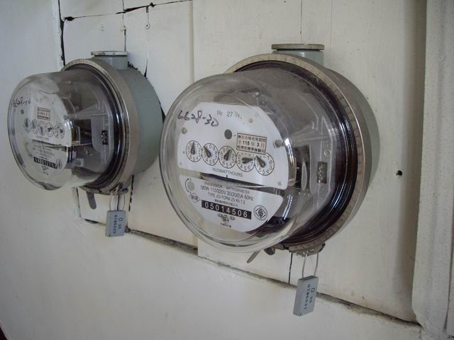
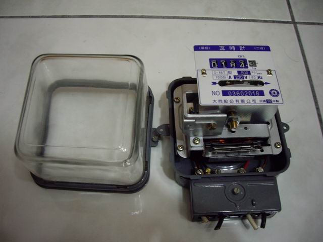
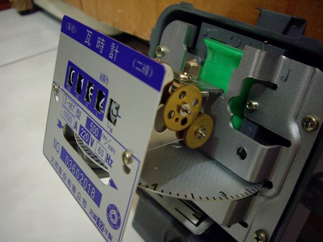
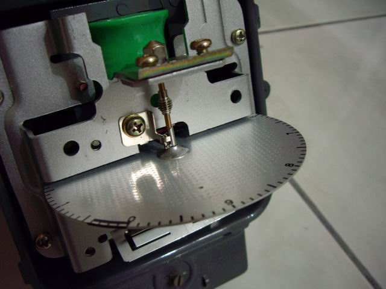
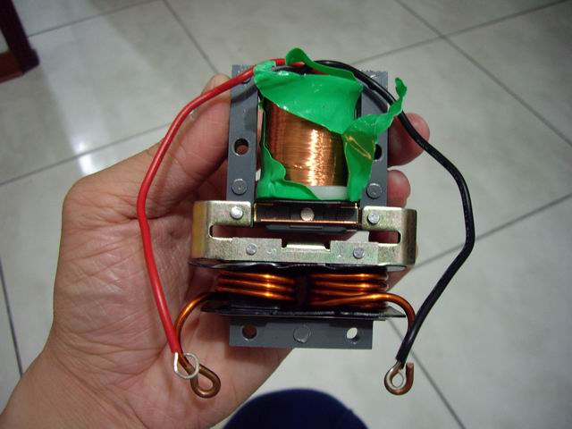
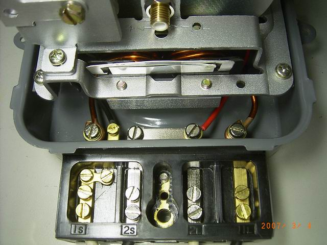

拆瓦時計
↑拆瓦時計的影片。

↑公寓的樓梯間，常常可以見到瓦時計，它是電力公司用來計算你家用電量的儀器。
用電量大時，裡頭金屬圓盤便會轉的比較快。想一想：電費計算的單位是什麼？

↑想知道為何用電時，金屬圓盤會轉動，所以把瓦時計拆開，一探究竟。

↑金屬圓盤下方看到裡面有線圈，以及導線。左邊胖胖的，夾住金屬圓盤的是減速磁鐵，
想一想：磁鐵如何使金屬原盤減速？

↑側面可以看到齒輪組，當金屬圓盤轉動時，帶動計數器，記錄用電度數。

↑金屬圓盤軸心有防逆轉裝置，避免有心人士將電路反接，使讀數倒退走。

↑拆開圓盤後的線圈，線圈共有兩組，下面的圈數少線徑粗，上面的圈數多但線徑細。
當你家用電時，線圈就會有電流流過，造成的電流磁效應使原盤轉動。
想一想：線圈造怎樣的磁場，使得金屬圓盤轉動？

↑讓你看清楚接線圖，1S與2S接電力公司來的電源線，1L與2L街的適用電負載，
也就是你家裡的電器們。